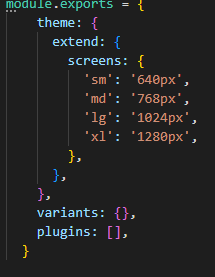
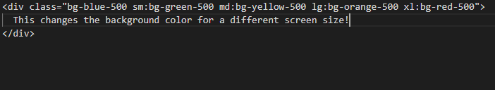

To begin the task I decided to cover would be how to add different screen sizes. This is because if you can figure this out it allows you can specify break points, color, fonts and more. Its also good to know how to do as clients may have different screen sizes. But make sure to name your variables something you can remamber. As I choose sm,md,lg, and xl. Don't forget you can also add more then I did as there are many different screen sizes this is just an example. This is what setting the screen sizes should look like.
As the code above shows we set a series of different screen sizes which can allow easier customization in the furture. By doing something this simple it will allow us to stop having to write CSS at each breakpoint. We all know how annoying CSS is so we should try and spare ourselves the trouble. The code below is the example of how we can use the above code to change each screen and the font on individual ones.
The above task is super simple but as said before it makes us do less work in CSS. We can be a bit lazier then normal. During our time we have found ways code can help the future or even help us make ways to share information. However to do so we need proper designs to be able to do this. So your clients or others can understand your goal. By using tailwind the above code make our life easier instead of having to make a different class in CSS each time. Even something as simple as the above code as you know I hate CSS because it always refuses to coperate with me which was why I wanted to figure out a way to do less of it. This post was the way I found around having to do so much with tailwind. Due to issues with 11ty I was almost unable to do the framework app I will try and have something done for it but no gurantees it works.